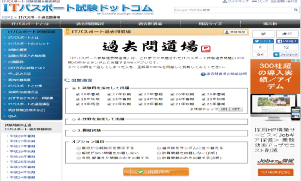

ITパスポート取得へ
ITパスポートの教材へようこそ。
ITパスポート合格のメリット
ＩＴに関する知識にとどまらず、企業活動、経営戦略、会計や法務など、ＩＴを活用する上で前提となる幅広い知識がバランス良く習得できます。
社会人としての基礎知識とＩＴ力を兼ね備えていることを証明する国家試験です。面接・履歴書等で自らの知識を証明し、アピールすることができます。
公式サイト https://www3.jitec.ipa.go.jp/JitesCbt/ サイトに飛ぶ 
過去問道場 http://www.itpassportsiken.com/ipkakomon.php サイトに飛ぶ